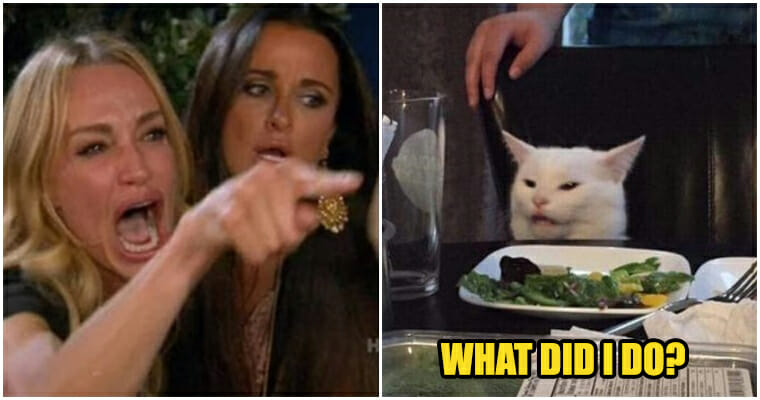
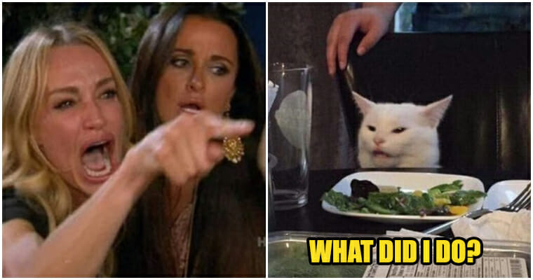

Picture of Myself
huhu
About Myself
Hello and Assalamualaikum, my name is Muhammad Aiman Adli Bin Kahar. I am a Computer Science student. I started my study at UiTM Kedah, Diploma in Computer Science and Mathematics. After graduated, I continue my study at UiTM Shah Alam, Bachelor of Computer Science (Hons.) Netcentric Computing. Currently, I am a Part 3 student and still studying. The purpose of this blog is I want to talk about myself as requested by my ITT501 lecturer Profesor Madya Dr Nor Shahniza Kamal Bashah.
My Opinion on Computer Science

Computer Science is one of the course that is really going up these days since technology is getting better day by day. With how technology grows, I think study in Computer Science will never be the waste of time. In fact, it will be a good investment for your future. So far, Computer Science is actually kinda fun to learn, but it need a passion and real hardwork in order to success in this course. I hope, after I graduate, I get a job that I want one day.
My Passion/Hobby/Interest
- Passion
- My passion is to be successful in this Computer Science course.
- I need to achieve my goals which is to be a successful Computer programmer one day.
- Hobby
- I love to play games at my free time, more to mobile games. Such as PUBG Mobile and Mobile Legends.
- Sometimes, I enjoy cycling with my friends. Depends on our mood for cycling huhu.
- Fishing also is my new hobby, since I have nothing to do due to MCO.
- Interest
- My interest is I love listening to music. Listening music helps reduce my stress.
- Also, I have interest in pets such as cat. Cat is my favourite one pet.


 
